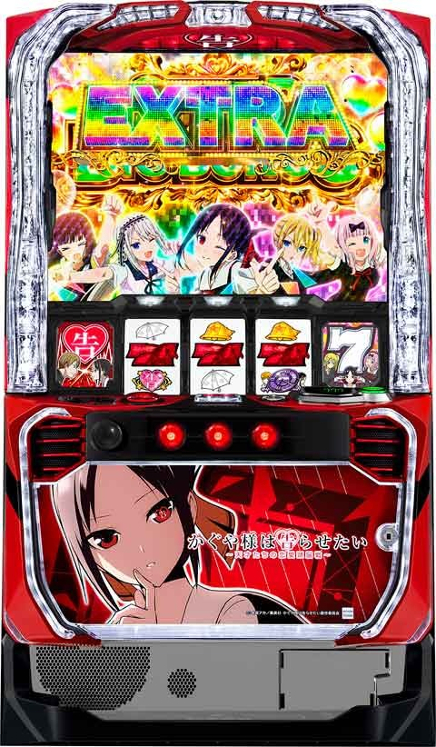
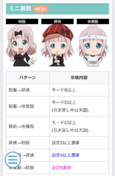
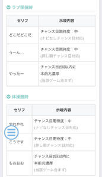
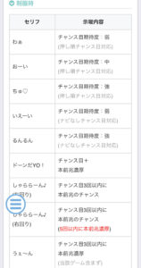

Lかぐや様は告らせたい

【天井情報】
1100G+α BIG以上
REG後 900G +α
リセット時 800G+α
CZスルー天井 7スルー 8回目ボーナス当選
チャンス目カウンタ 30回でCZ当選
【リセット判別】
SANKYOなのでガックン判別可能？
【有利区間について】
エンディング等で有利区間リセット後、奇跡的相性モードに突入し32G以内にSBBが80%ループ
有利区間切れ条件 差枚+1900枚前後
狙い目
【リセット狙い】
400G
【ボーナス間天井狙い】
BIG後 680G
REG後 430G
REG4連続以上後 400G
狙い目から更に差枚でボーダー調整する
【裏REG狙い】
5連続後 0Gから
4連後後 0Gから130ゾーンまで & 400Gからボーナス当選まで
【ゾーン狙い】
・100G引き戻し
SBB後、連チャン後(4連以上後) 0Gから
差枚+1200枚以上 引き戻し確認
差枚+1500枚以上 引き戻し+130ゾーン消化まで
それ以外は弱い
・130Gゾーン
累計スルーで判断（REGやCZ失敗でスルーをカウントし、BIGで0スルーに戻る）
累計0スルー
13チャメ以上 100から
8チャメ以上 130から
累計1スルー
12チャメ以上 100から
8チャメ以上 120から
累計2スルー(モード良さそうなら)
8チャメ以上 100から
7チャメ以下 120から
累計3スルー以降
7チャメ以上 100から
6チャメ以下 120から
モードC以上っぽい場合
引き戻し含めて130ゾーン消化まで
※130のゾーンは130-138くらいで液晶G数の色が青に変わる。CZ非当選時は160くらいで終わり。CZ当選時は190くらいまで引っ張られる。
・300Gゾーン
一律300Gから
・獲得枚数の目安
REG 約83枚
BIG 約270枚
SBB 約490枚
【CZスルー天井狙い】
最大7スルーでCZ天井。（CZのみで7スルー）
CZ、REGが続くほどモードアップしCZ当選率が上がる。
現実的に狙う機会は無さそう。
【チャンス目カウンタ狙い】
5の倍数強いから15.20の1個前なら単体で打てそう？
チャンス目カウンタ 23回から
【有利区間切れ(差枚)狙い】
プラス差枚の方が状況良いため差枚でボーダー調整する。
差枚マイナス 10-20G上げる
差枚プラス そのまま
差枚+500以上 10G下げる
差枚+1000以上 20G下げる
差枚+1500以上 40G下げる
【モードC狙い】
モードC以上確定時はビッグ当選までモードが下がらない。
積極派 BIG当選まで
慎重派 0-5回は打つ。0-5回抜け後7回以下で一旦やめ。8回超えたらCZ当選まで。
【CZ間狙い】
CZ失敗、REGでモードアップしていく。
設定変更後は1スルーと同等。
ステージによってチャンス目確率が変わるためボーダー調整？
昼ステージ 0-1回ボーダー上げる
夕方ステージ 0-1回ボーダー下げる
夜ステージ 1-2回ボーダー下げる
例
モードA CZ天井狙い 23回から
モードA 16-20回振分狙い 18回から
①各モードの狙い目
・モードA
26-30回が選ばれやすい(31%)
16-20回も多少選ばれる(23%)
狙い目
23回からCZ当選まで。
19回から20回まで。
・モードB
11-15回が選ばれやすい(29%)
それ以降は段階的に選ばれていく。
狙い目
19回からCZ当選まで。
14回から15回まで。
・モードC
16-20回が天井。
各振分均等。Cまで上がればかなりボーダー下げれる。
狙い目
積極派 BIG当選まで
慎重派 8回からCZまで
0-5回 0回から5回まで。
6-10回 8回から10回まで。
・モードD
5回天井。
BIG当選までモードCとDがループする。
狙い目
モードC同様？(ループするため)
②累計スルーとCZ間ハマりG数からのモード予測
・0スルー
BIG後は最もモードが悪い
モードBの可能性もある
狙い目
天井狙いはモードA同様
11-15回は14回から
16-20回は19回から
・1スルー
モードB以上確率75%
前回CZ間400以上ハマると前回モードAの可能性が上がる。
狙い目
天井狙いはモードA同様
11-15回は14回から
16-20回は19回から
・2スルー
モードB以上確率94%
基本モードB以上。C以上確率53%
この先250G前後以内の当選が続くとモードC期待度アップ
狙い目
前回早い当たり
天井狙い 19回から
10-15回 14回
前回ややハマり 1スルー と同じ条件で
・3スルー
ほぼモードB以上。3スルーでC以上確率70%
前回、前々回と大きいハマりがなければ(250G前後以内？)モードC以上が期待できる。逆に大きいハマり(400G超え？)が前回、前々回にあるとモードBを視野に入れた方が良さそう。
モードC見込める様ならモードC想定の狙い目。
・4スルー以降
モードA確率1.2%、モードC以上確率80%
前回、前々回に大きなハマりなければ基本的にモードC以上。
基本的にモードC想定の狙い目。
やめ時
BIG、REG単発後は即やめ
2連後も即やめ。
3連後はSBB無しなら即やめ。
※心配なら100G回す。
SBB単発後は100G回す。
それ以外(4連以上後)は100G回す。
REG4連続以上となった場合は130ゾーンまで。
※終了画面やアイキャッチで引き戻し示唆が出た場合は不問で100G回す。
その他
モード示唆



参考元
基本情報
- メーカー: SANKYO
- 機械割: 97.7% 〜 114.9%
- 導入開始日: 2024年09月02日（月）
- ゲーム性概要: 通常時はチャンス目規定回数やゲーム数消化でCZを引き当て、ボーナスを目指すゲーム性。出玉増加のメイン契機はボーナスの1G連（BIG以上濃厚）で、ボーナス中はおもにチャンス目で1G連が抽選される。 1G連の特化ゾーンやツラヌキ時などに移行する奇跡的相性（マリアージュ）モードなど、強力なトリガーも多数搭載されている。


打ち方
打ち方・小役
打ち方（小役狙い）
［最初に狙う絵柄］

取りこぼしはないのでオールフリー打ち（左1st）でOKだ。
［ベルの停止形］

［時計・チャンス目の停止形］

W時計は一気に夜ステージへ移行するため、チャンス目連打に期待できる。
変則押しはNG

ナビ非発生時は左1stでの消化を推奨だ。
解析情報通常時
小役関連
チャンス目概要

CZ当選のメイン契機で、規定回数到達時は恋愛頭脳戦（前兆）を経てCZへ突入。当選回数で期待度が異なり、1の位が0・4・5・9がCZのチャンス （とくに5の倍数回の期待度が高い!?） となる。強チャンス目のみ回数不問でボーナスを抽選する。
チャンス目確率
| 内部状態（ステージ） | 確率（チャンス目・強チャンス目合算） |
|---|---|
| 通常（朝・昼） | 約1/22 |
| 高確（夕） | 約1/11 |
| 超高確（夜） | 約1/7 |
強チャンス目のCZ当選率
| 役 | 当選率 |
|---|---|
| 強チャンス目 | 約35% |
［チャンス目回数］

回数は画面左下に表示されている。
時計


時計停止時は専用の演出が発生して内部状態（ステージ）がアップ。超高確中はチャンス目として抽選される。
時計の抽選まとめ
| 状態 | 特徴 |
|---|---|
| 通常時の通常・高確中 | ● 高確や超高確に昇格 ※W時計は超高確移行濃厚 |
| 通常時の超高確中 | ● 時計…チャンス目扱いで抽選 ● W時計（15枚）…超高確ゲーム数ホールド |
| CZ中 | ● 時計…2択押し順当て（成功でチャンス目） ● W時計（15枚）…ボーナス濃厚 |
| ボーナス中 | ● 時計…押し順でチャンス目に変換 ● W時計（15枚）…1G連抽選 |
時計のステージ（内部状態）移行率
| 滞在ステージ | 夕（高確）へ | 夜（超高確）へ |
|---|---|---|
| 朝・昼 | 約86% | 約14% |
| 夕 | － | 100% |
| 夜 | チャンス目扱いor超高確ゲーム数ホールド |
※W時計は夜移行濃厚
内部状態関連
内部状態概要
内部状態は通常（朝・昼）、高確（夕）、超高確（夜）の3種類で、時計停止時と規定ゲーム数消化で移行する。
内部状態ごとのチャンス目確率はコチラ
内部状態性能
| 項目 | 内容 |
|---|---|
| 種類 | 通常・高確・超高確 |
| 移行契機 | 時計停止時・規定ゲーム数消化（平均60G消化ごと） |
| 特徴 | 通常＜高確＜超高確でチャンス目確率がアップ |
高確・超高確の平均滞在ゲーム数
| 内部状態 | 滞在ゲーム数 |
|---|---|
| 高確（夕） | 約15G |
| 超高確（夜） | 約25G |
| 超高確中のホールド | 約20G |
※ホールドは超高確中のW時計（15枚）時に抽選
モード
通常モード概要
通常時はA〜Dという4つのモードでCZ当選までのチャンス目規定回数を管理。モード移行は設定変更時・ボーナス当選時・CZ当選時におこなわれ、CZ失敗後やREG後は上位モードが選ばれやすい。
モードごとのチャンス目規定回数特徴
| モード | 特徴 |
|---|---|
| 通常A | ● 選択率は1の位→9・0回が高く、4・5回が低い ● 20回の選択率が高い ● 1の位→4・5・9・0回でのみフェイク前兆を抽選 ● 最大天井は30回 |
| 通常B | ● 選択率は1の位→4・5回が高く、9・0回が低い ● 10回ごとの選択率が高い ● 1の位→4・5・9・0回以外でもフェイク前兆を抽選 ● 最大天井は30回 |
| 通常C | ● 選択率は1の位→4・9回が高い ● 1の位→4・5・9・0回以外でもフェイク前兆を抽選 ● 1の位→5回でフェイク前兆に行かないことがある ● 最大天井は19回 |
| 通常D | ● フェイク前兆がない（前兆発展＝本前兆） ● 最大天井は5回 |
［設定変更後］モード移行率
| 移行先 | 移行率 |
|---|---|
| 通常Aへ | 約38% |
| 通常Bへ | 約60% |
| 通常Cへ | 約1% |
| 通常Dへ | 約1% |
［CZ失敗・REG後］モード移行率
| 移行先 | 前回のモード | |||
|---|---|---|---|---|
| 移行先 | 通常A | 通常B | 通常C | 通常D |
| 通常Aへ | 約38% | － | － | － |
| 通常Bへ | 約60% | 約57% | － | － |
| 通常Cへ | 約1% | 約42% | 約68% | 約75% |
| 通常Dへ | 約1% | 約1% | 約32% | 約25% |
CZ失敗やREG後はモードが下がらない。
［BIG・スーパーBIG後］モード移行率
| 移行先 | 移行率 |
|---|---|
| 通常Aへ | 約62% |
| 通常Bへ | 約35% |
| 通常Cへ | 約2% |
| 通常Dへ | 約1% |
BIG後は前回のモード不問で抽選。通常A移行率が高いため、ヤメるのであればREGよりBIG後のほうがオススメだ。
モードごとのチャンス目規定回数分布
| 規定回数 | 通常A | 通常B | 通常C | 通常D |
|---|---|---|---|---|
| 1～5回 | 約6％ | 約23％ | 約22％ | 100% |
| 6～10回 | 約12％ | 約13％ | 約24％ | － |
| 11～15回 | 約12％ | 約29％ | 約26％ | － |
| 16～20回 | 約23％ | 約16％ | 約28％ | － |
| 21～25回 | 約16％ | 約12％ | － | － |
| 26～30回 | 約31％ | 約7％ | － | － |
規定ゲーム数消化
規定ゲーム数消化の抽選

画面右下のゲーム数表示の色で規定ゲーム数消化時（CZ抽選）の前兆を示唆。青や赤に変化すれば前兆期待度アップ。 電断時（設定変更の有無は不問）は初回のボーナス当選まで規定ゲーム数の色は変化しないため、ゲーム数前兆で設定変更の有無を見抜くことはできない。ただし、前日のゲーム数にもよるが下記表のゲーム数以外でCZに当選した場合は設定据え置きの可能性大だ。 ※ゲーム数契機でのボーナスは天井到達時のみ
CZ抽選の規定ゲーム数
| 規定ゲーム数 | 特徴 |
|---|---|
| 130G | 300・600Gよりは期待度が低い |
| 300G | 130Gより期待度が高い |
| 600G | 130Gより期待度が高い |
前兆ごとのゲーム数色選択割合＆期待度
| ゲーム数の色 | フェイク前兆 | 本前兆 | トータル期待度 |
|---|---|---|---|
| 青 | 約99% | 約90% | 約19% |
| 赤 | 約1% | 約10% | 約82% |
本前兆でも9割は青が選ばれる。
恋愛頭脳戦（前兆）
前兆中の書き換え抽選
フェイク前兆中、チャンス目の規定回数到達やゲーム数消化で本前兆になった場合、前兆自体を書き換えるため、前兆ゲーム数はフェイクのものを引き継ぐ。 また、CZ本前兆中は規定回数ではなく、チャンス目を引くごとにボーナスへの昇格を抽選。このケースで昇格した場合のボーナスはBIG濃厚となるところもポイントだ。
前兆中の抽選
| 前兆中の当選パターン | 特徴 |
|---|---|
| CZフェイク前兆中 →チャンス目規定回数到達 | フェイクのゲーム数を 引き継いで本前兆へ |
| CZフェイク前兆中 →ゲーム数消化で本前兆到達 | フェイクのゲーム数を 引き継いで本前兆へ |
| 本前兆中 →チャンス目でボーナス昇格抽選 | BIG濃厚 |
| BIG昇格後 →チャンス目でBIG種別の昇格抽選 | BIG→スーパーBIG→EXBIGの 順番に昇格 |
上記抽選は恋愛頭脳戦突入前のプレ前兆中も同様だ。
告らせたいチャレンジ（CZ）
CZ概要

15G＋α以内に狙え演出で指定されたリールにサンド目を止めることができれば成功＝ボーナス当選となる。2択当てや小役成立の次ゲームは狙え演出発生濃厚。一発告知演出は発生した時点で大チャンスだ。
※モードやシナリオの概念はなく、毎ゲームの成立役に応じて抽選
CZ性能
| 項目 | 内容 |
|---|---|
| 当選契機 | チャンス目規定回数、規定ゲーム数消化 |
| 継続ゲーム数 | 15G＋α |
| 成功期待度 | 約58% |
| 消化中の抽選 | 小役や2択当てでボーナス（7揃い）抽選 |
| 狙え演出確率 | 約1/7 |
| 一発告知確率 | 約1/170 |
| その他 | 2択当てや狙え演出が 一度も発生しなかった場合は15Gを再セット |
［2択当て］

キャラの種類で成功時の期待度変化。
［狙え演出］

［一発告知演出］

擬似遊技発生ゲームの成立役別・成功書き換え当選率
| 役 | 狙え演出時 | 一発告知演出時 |
|---|---|---|
| 下記以外 | 約46% | 100% |
| 押し順チャンス目（2択当て） | 約46% | 100% |
| チャンス目 | 100% | 100% |
| ベルこぼし | 約17% | 約37% |
| 共通ベル | 100% | 100% |
| 強チャンス目 | 100% | 100% |
| 平均期待度 | 約29% | 約52% |
キャラごとの期待度はコチラ
奇跡的相性（マリアージュ）モード
奇跡的相性モード

おもにエンディング到達後に突入する超天国的なモードで、32G以内のスーパーBIG当選濃厚。 さらにボーナスループ率（1G連＋引き戻しチャンス）が約80%にアップする。
引き戻しチャンス
引き戻しチャンス概要

ボーナス（BIG・スーパーBIG・REG）で1G連非当選後は約100G間の引き戻しチャンスへ突入。引き戻し期待度は約25%（5連目以降は約50%）、突入時にボーナス当選の成否と1〜100Gのどこで告知されるかが抽選される。 滞在中のチャンス目はCZだけでなく告知ゲーム数の短縮 を抽選。 滞在中のボーナスはBIG以上濃厚。 当選したCZは、引き戻しチャンス終了後の130Gのゾーンから前兆を経てまとめて放出される（CZ当選率は通常時と同じ）。
演出動画
ロングフリーズ
ロングフリーズはスーパーBIG（獲得枚数約490枚）を3個獲得と、超強力。高設定ほど発生しやすい!?
フリーズ
ロングフリーズ


時計（リプレイ）の一部で発生。恩恵はスーパーBIG3個と強力だ。
ロングフリーズ性能
| 項目 | 内容 |
|---|---|
| 発生契機 | 時計の一部 |
| 恩恵 | スーパーBIG3個ストック |
| その他 | 高設定ほど発生しやすい |
解析情報ボーナス時
BIG・スーパーBIG
BIG・スーパーBIG概要


BIG・スーパーBIG中は3つの演出モードを任意に選択可能。モードによって 1G連の告知パターンが変化 する。 スーパーBIGは前半（24G）、後半（30G）に分かれていて、前半は専用ムービー発生、後半では通常のBIGと同じく3つの演出モードで1G連が告知（前半でも1G連を抽選）。
5連目以降は引き戻しチャンス中の期待度がアップして、トータル期待度が約80%になる。
1G連にモードやシナリオといった概念はなく、毎ゲームの抽選で決定する。
BIG・スーパーBIG性能
| 項目 | BIG | スーパーBIG |
|---|---|---|
| 当選契機 | CZ成功、チャンス目規定回数、ゲーム数消化、 1G連、引き戻しチャンス成功など | |
| 継続ゲーム数 | 30G | 54G |
| 純増 | 約9.0枚/G | |
| 平均獲得枚数 | 約270枚 | 約490枚 |
| 消化中の抽選 | BIG1G連 | |
| 1G連期待度 | 約45% | |
| 引き戻しチャンス 成功期待度 | 約25% （5連目以降は約50%） | |
| 1G連＋引き戻しチャンス 合算期待度 | 約60% （5連目以降は約80%） | |
| その他 | 終了後は引き戻しチャンスへ |
1契機で複数ストックを獲得する場合もある。
［最終告知］（舌戦バトル）

ラストの舌戦バトル勝利で1G連ストック。見た目上、チャンス目成立がわからない仕様なので最後までドキドキできる。
［チャンス告知］（マジきゅん）

告らせタイム成功で1G連ストック。チャンス目成立後は演出発展に期待だ。
［一発告知］（チカ千花）

告知発生で1G連ストック。チャンス目成立後はチカパト点灯に期待しよう。
［スーパーBIGの前半パート］

［BIG/スーパーBIG］1G連当選率
| 役 | 当選率 |
|---|---|
| 1枚役・リプレイ | 約4% |
| ナビなしチャンス目 | 約13% |
| 押し順ベル | 約1% |
| W時計（15枚） | 約25% |
| 強チャンス目 | 約50% |
抽選値は全設定共通。毎ゲーム成立役に応じて抽選される。
ナビありチャンス目は1枚役・リプレイの一部で出現し、1G連当選期待度アップ。
ボーナス当選後のエクストラボーナス昇格率（設定1）
| ボーナス | 昇格率 |
|---|---|
| BIG | 約1% |
| スーパーBIG | 約2% |
若干ではあるが、高設定かつスーパーBIG経由のほうが昇格しやすい。
REG
REG概要

ベルナビ7回まで継続。1G連期待度が大幅にアップする裏REGも存在。 キャラの種類、登場順などで設定や1G連、チャンス目規定回数、モードが示唆される。
※BIG中と同じく1G連にモードやシナリオといった概念はない（毎ゲーム抽選）
REG性能
| 項目 | 内容 |
|---|---|
| 当選契機 | CZ成功、チャンス目規定回数、 ゲーム数消化など |
| 継続ゲーム数 | ベルナビ7回まで |
| 純増 | 約9.0枚/G |
| 平均獲得枚数 | 約83枚 |
| 消化中の抽選 | BIG1G連（抽選は弱め） |
| 1G連＋引き戻しチャンス 合算期待度 | 約26～27% |
| その他 | 終了後は引き戻しチャンスへ |
［キャラ紹介］

［1G連ストック］

裏REG移行条件
裏REGはREG後100G以内の引き戻し失敗が連続するほど（REGが連続するほど）移行しやすい。最大10回目で裏REG濃厚だ。 また、REG後は上位の通常モード移行が優遇されるため、少ないチャンス目回数でボーナスに当選しやすくなる。
※突入時は見た目上では通常のREGと判別不可だが終了画面で必ず告知発生
※1G連獲得時に飛び出しPUSHが発生すれば裏REG濃厚
REGの連続回数別・裏REG当選期待度序列
| 連続回数 | 期待度 |
|---|---|
| 5回 | チャンス |
| 6～7回 | 5回目より期待度アップ |
| 8～9回 | 大チャンス |
| 10回 | 裏REG濃厚 |
※6～9回も連続回数が多いほど裏REG期待度がアップ
［裏REG］1G連当選率
| 役 | 当選率 |
|---|---|
| 1枚役・リプレイ | 約31% |
| ナビなしチャンス目 | 100% |
| 押し順ベル | 約39% |
| W時計（15枚） | 100% |
| 強チャンス目 | 100% |
設定差はなし。1枚役・リプレイ、押し順ベルでも1G連当選の大チャンス。
ナビありチャンス目は1枚役・リプレイの一部で出現し、1G連当選期待度アップ。
ボーナス1G連
1G連はすべてガチ抽選
ボーナス中の1G連は毎ゲームの成立役を参照して抽選。モードやテーブルといった概念はないため、純粋に毎ゲームのヒキが重要となる。
1G連特化ゾーン
1G連特化ゾーン概要
BIG・スーパーBIG中の1G連当選時の一部で突入する5G＋αのボーナス1G連の特化ゾーン。選択していた演出モードによって告知パターンが変化する。上乗せ特化ゾーン自体がループするパターンもアリ。
1G連特化ゾーン性能
| 項目 | 内容 |
|---|---|
| 当選契機 | BIG・スーパーBIG中1G連の一部など |
| 継続ゲーム数 | 5G＋α |
| 純増 | 約9.0枚/G |
| 消化中の抽選 | 毎ゲーム ボーナス1G連を抽選 |
| 平均ストック | 2個 |
| 平均期待枚数 | 2670枚 |
ループ率は約2.5%、成立役不問で最終ゲームに抽選される。
1G連特化ゾーンの演出一覧
| 選択していた演出モード | 1G連特化ゾーンの演出 |
|---|---|
| 最終告知（舌戦バトル） | 白銀覚醒 |
| チャンス告知（マジきゅん） | ガチきゅんPUSH |
| 一発告知（チカ千花） | チカブレイク |
［白銀覚醒］

狙え演出成功で1G連ストック。
［ガチきゅんPUSH］

画面下の保留ごとに抽選。演出成功で1G連ストックだ。
［チカブレイク］

告知発生で1G連ストック。
［1G連特化ゾーンループ］

特化ゾーン中の1G連ストック当選率
| 役 | 当選率 |
|---|---|
| その他 | 約20% |
| 1枚役・リプレイ | 約38% |
| ナビなしチャンス目 | 約81% |
| 押し順ベル | 約38% |
| W時計（15枚） | 約81% |
| 強チャンス目 | 約81% |
※1枚役・リプレイ契機の当選時の一部で押し順チャンス目が出現
上記の当選率はあくまで期待度の目安。1枚役・リプレイで当選した場合の一部で押し順チャンス目が発生するなど、見た目上と直結しないケースもあるので、シンプルに毎ゲーム1G連が抽選され、ナビなしチャンス目は期待度アップと考えてOKだ。
エクストラボーナス
エクストラボーナス概要

BIG・スーパーBIGの一部で突入するプレミアムボーナス的存在。開始時に専用の初期ゲーム数決定ゾーンで継続ゲーム数を決定する。初期ゲーム数決定ゾーンでは50Gor100Gの上乗せが約80%でループするため、ヒキ次第で大量ゲーム数を獲得できる。 当選した時点でBIG以上を1個ストックしていて、ゲーム数消化後に放出される。
エクストラボーナス性能
| 項目 | 内容 |
|---|---|
| 当選契機 | BIG・スーパーBIGの一部など |
| 継続ゲーム数 | 初期ゲーム数決定ゾーンで抽選 |
| 純増 | 約9.0枚/G |
| 平均期待枚数 | 3450枚 |
| 消化中の抽選 | BIG以上の1G連抽選 |
| その他 | 初期ゲーム数決定ゾーンでは 50Gor100Gを80%ループで上乗せ |
［初期ゲーム数決定ゾーン］

失敗するまで50Gor100Gを上乗せしていく。
エクストラボーナス開始時の上乗せ当選率
| 役 | 終了 | ＋50G | ＋100G |
|---|---|---|---|
| その他 | 約20% | 約40% | 約40% |
| 1枚役・リプレイ | 約20% | 約40% | 約40% |
| ナビなしチャンス目 | － | － | 100% |
| 押し順ベル（15枚） | 約20% | 約40% | 約40% |
| W時計（15枚） | － | － | 100% |
| 強チャンス目 | － | － | 100% |
※エンディングが発生する枚数まで到達した場合は役不問で終了
ほかの要素と同じく、1枚役・リプレイで当選した場合の一部で押し順チャンス目が発生する。
ツラヌキ・有利区間
ツラヌキ時の恩恵
| 項目 | 内容 |
|---|---|
| 条件 | エンディング到達後など |
| 恩恵 | 奇跡的相性モード突入 奇跡的相性モードの概要はコチラ |
エンディング後は奇跡的相性モードへ突入して、32G以内に必ずスーパーBIGが当選する。 大量枚数を獲得した状態でのボーナス終了後の一部で内部的に有利区間が切れる場合もある。
ボーナス共通
ボーナス比率
初当り時のボーナス比率はBIG以上：REGでほぼ50%。若干BIG以上のほうが高い。 また、1G連と引き戻しチャンスで連チャンするほどスーパーBIG比率が上がり、7連以上で最大の約36%までアップする。 高設定ほどスーパーBIG比率が高いところもポイントだ。
ボーナス比率
| 当選タイミング | 特徴 |
|---|---|
| 初当り | BIG以上：REG＝ほぼ1：1 （若干BIG以上のほうが多い） |
| 1G連と引き戻しチャンス | 連チャンするほどスーパーBIG比率がアップ、 スーパーBIG比率は最大約36% |
ボーナス比率（全設定・全状態を考慮した合算値）
| 連チャン回数 | REG | BIG | スーパーBIG |
|---|---|---|---|
| 初回 | 約49% | 約50% | 約1% |
| 2連目 | － | 約98% | 約2% |
| 3連目 | － | 約97% | 約3% |
| 4連目 | － | 約88% | 約12% |
| 5連目 | － | 約82% | 約18% |
| 6連目 | － | 約81% | 約19% |
| 7連目以降 | － | 約64% | 約36% |
※奇跡的相性モード中は7連目以降と同じ抽選値
演出情報
通常時
ステージごとのチャンス目確率
| ステージ | 確率（チャンス目・強チャンス目合算） |
|---|---|
| 朝・昼 | 約1/22 |
| 夕 | 約1/11 |
| 夜 | 約1/7 |
基本的に時計停止時に時間背景が変化。背景（内部状態）に応じてチャンス目確率が変化する。 かぐやの部屋は前兆示唆ステージだ。
［朝〜昼］

［夕］

［夜］

［かぐやの部屋］

ミニ藤原の示唆

画面左下のミニ藤原はリアクションででチャンス目成立やチャンス目の規定回数、衣装チェンジで滞在している通常モードや設定を示唆。リアクションは動作＆セリフが連動して発生するため、セリフで確認するのがわかりやすい。 体操着は通常C以上濃厚となるので、出現時は続行することをオススメだ。
滞在モード別・衣装チェンジパターン出現率
| 滞在モード | 制服→ラブ探偵 | 制服→体操着 | ラブ探偵→体操着 |
|---|---|---|---|
| 通常A | － | － | － |
| 通常B | 低め | － | － |
| 通常C | 低め | 低め | 約1% |
| 通常D | 低め | 約1% | 約1% |
ミニ藤原の セリフ 別示唆まとめ
| 衣装 | セリフ | 示唆 |
|---|---|---|
| 制服 | わぁ！ | ● 押し順ナビ時に発生 ● チャンス目期待度：弱 |
| 制服 | おーい！ | ● 押し順ナビ時に発生 ● チャンス目期待度：中 |
| 制服 | ちゅ♥ | ● 押し順ナビ時に発生 ● チャンス目期待度：強 |
| 制服 | いえーい！ | ● ナビなしのチャンス目示唆 ● チャンス目期待度：弱 |
| 制服 | るんるん♪ | ● ナビなしのチャンス目示唆 ● チャンス目期待度：強 |
| 制服 | ドーンだYO! | ● チャンス目濃厚 ● 当該ゲームでの本前兆移行濃厚 |
| 制服 | しゃららーん♪ （左回り） | ● チャンス目3回以内に本前兆到達のチャンス |
| 制服 | しゃららーん♪ （右回り） | ● チャンス目3回以内に本前兆到達のチャンスかつ 5回以内に本前兆濃厚 |
| 制服 | うぇ～ん | ● チャンス目 3回以内に本前兆濃厚 ※当該ゲームのチャンス目は含まない |
| ラブ探偵 | やったー！ | ● チャンス目 2回以内に本前兆濃厚 ※当該ゲームのチャンス目は含まない |
| ラブ探偵 | どこだ！どこだ！ | ● ナビなしのチャンス目示唆 ● チャンス目期待度：中 |
| ラブ探偵 | う～ん… | ● 押し順ナビ時に発生 ● チャンス目期待度：中 |
| 体操着 | もおおお！ | ● チャンス目 2回以内に本前兆濃厚 ※当該ゲームのチャンス目は含まない |
| 体操着 | やれやれ… | ● ナビなしのチャンス目示唆 ● チャンス目期待度：中 |
| 体操着 | こうです！ | ● 押し順ナビ時に発生 ● チャンス目期待度：中 |
ミニ藤原の 衣装チェンジパターン 別示唆まとめ
| パターン | 示唆 |
|---|---|
| 制服→ラブ探偵 | ● 通常B以上濃厚 |
| 制服→体操着 | ● 通常C以上濃厚 ● 引き戻しゾーン中は 天国濃厚 |
| ラブ探偵→体操着 | ● 通常C以上濃厚 ● 引き戻しゾーン中は 天国濃厚 |
| ラブ探偵→制服 | ● 設定2以上濃厚 |
| 体操着→制服 | ● 設定6濃厚 |
| 体操着→ラブ探偵 | ● 設定4以上濃厚 |
※「変身！」セリフ経由の衣装チェンジが対象（CZ失敗後などは含まない）

心音演出の前兆移行期待度
| 心音 | 期待度 |
|---|---|
| 白 | 約10% |
| 青 | 約29% |
| ピンク | 約81% |
| ピンク＆告 | ボーナス直撃（BIG以上）濃厚 |
［青］

［ピンク］

［告ランプ］

発生時はリール左側の告ランプの色も連動して変化するためわかりやすい。
アイキャッチの示唆
ボーナス終了後、引き戻しチャンスへ移行するゲームで表示されるアイキャッチで、引き戻しチャンスのボーナス当選期待度が示唆される。 通常時のアイキャッチ（連続演出失敗後など）は次回のボーナス種別を示唆している。
引き戻しゾーン移行時のアイキャッチ別示唆
| パターン | 示唆 |
|---|---|
| 白 | デフォルト |
| 青 | 引き戻し期待度約67% |
| 赤 | 引き戻し期待度100% |
| 虹 | 1G連濃厚 |
通常時のアイキャッチ別示唆
| パターン | 示唆 |
|---|---|
| 白 | デフォルト（約9割は白背景） |
| 青 | 次回ボーナスのBIG以上期待度：約80% |
| 赤 | 次回ボーナスがスーパーBIG以上濃厚 |
［白］


［青］


［赤］


［虹］

プレミアム演出
夢夢ちゃんをはじめ、メロンやドラム君といったSANKYOキャラはすべてスーパーBIG濃厚。 ただし、ロングダックスやボイス系はスーパーBIG濃厚ではないので注意しよう。
［ルーレットのSANKYOキャラ］

［メロンしるこ］

［奇跡］

［祝福飛び出しPUSH］

［虹オーラ］

［パト回転］

［タコさんウインナー大量］

［相性777%］

［もう当たってる］

［燃え尽き］

［キモチ〜］

［藤原ジョーカー］

［金セリフ］

［夢夢ちゃん］


［白銀超美化］

［虹イラスト］

［自分で決めるなら当り］

［これを渡したら会長は大喜び］

［想像シーンオール虹］

［早坂コスプレ］

［金新聞］

［虹扇子］

［虹漫画］

［ゲーム画面のWIN］

［ロングダックス］

パワフルシリーズでおなじみ！
［WIN停止］


WIN停止のプレミアムはほかにも多数！
［大当り］


前兆（かぐやの部屋・恋愛頭脳戦）
恋愛頭脳戦概要

CZorボーナスの前兆ステージで、滞在中は様々な演出で期待度を示唆。ラストはジャッジ演出（連続演出）でCZ当選の成否が告知される。
前兆中のジャッジ演出期待度
| ジャッジ演出 | 期待度 |
|---|---|
| かぐや様は誘われたい | 約19% |
| かぐや様は差されたい | 約19% |
| 花火の音は聞こえない | 約82% |
| 一生に一度のお願い | CZ以上濃厚 |
演出成功でCZorボーナス濃厚となる。
［かぐや様は誘われたい］

［かぐや様は差されたい］

［花火の音は聞こえない］

［一生に一度のお願い］

前兆中の法則
ボーナス当選時は基本的に通常煽り→恋愛頭脳→連続演出の流れで告知。連続演出までのゲーム数が極端に短かったり長かったりするとチャンスとなる（前兆は最大32G）。かぐやの部屋を経由して恋愛頭脳戦へ移行すればチャンスアップだ。
恋愛頭脳戦の突入ルート別本前兆期待度
| ルート | 期待度 |
|---|---|
| 通常（下記以外） | 約39% |
| かぐやの部屋経由 | 約66% |
| 連続演出失敗経由 | 約98% |
ブロックごとの法則＆期待度
恋愛頭脳戦は6種類ある1〜3G間のブロックで構成されていて、組み合わせやパターンで本前兆期待度が変化する。
恋愛頭脳戦のブロック
| ブロック | パターン（ゲーム数） |
|---|---|
| 開始 | 開始ゲーム（1G） |
| 1 | 様々な演出発生（3G） |
| 2 | 3G目に「かぐや様は勝負したい」or 「かぐや様はときめきたい」が発生（3G） |
| 3 | 様々な演出発生（3G） |
| 4 | 3G目に「かぐや様は勝負したい演出」or 「かぐや様はときめきたい演出」が発生（3G） |
| 5 | お可愛いことあおり（2or3G） |
| 6 | ジャッジ演出発展あおり（1～3G） |
| 7 | ジャッジ演出（5or6G） |
※あくまで基本パターンなのでイレギュラーあり
ブロックの法則
| ブロック | 法則 |
|---|---|
| 2＆4 ブロック | ● 2ブロックの3G目が「かぐや様はときめきたい」で4ブロックの3G目が「かぐや様は勝負したい」なら 本前兆濃厚 ● 2ブロックと4ブロック目（各3G目）の文字色が格下げされれば 激アツ |
| 1～4 ブロック | ● 赤文字or激熱文字は 期待度90%以上 ● 激熱が2回以上発生すれば 本前兆濃厚 ● 1つのブロック内で緑or赤系演出が2回以上発生すれば 本前兆濃厚 ● お可愛いこと演出SU3発生で期待度約60% ● お可愛いこと演出SU3が2回以上発生すれば 本前兆濃厚 ● 超お可愛いこと演出は 本前兆濃厚 |
前兆中の色系の期待度
| 色系 | 期待度 |
|---|---|
| チャンスアップなし | 約29% |
| 緑系 | 約36% |
| 赤系or激熱 | 約97% |
お可愛いこと演出のあおりパターン
| 1G目 | 2G目 | 期待度 |
|---|---|---|
| SU1 | SU1 | 100% |
| SU1 | SU2 | デフォルト |
| SU1 | SU3 | 約60% |
| SU2 | SU2 | デフォルト |
| SU2 | SU3 | 約60% |
| 非発生 | SU3 | ボーナス期待度アップ |
| SU3 | 非発生 | ボーナス期待度アップ |
| SU3 | SU3 | ボーナス期待度アップ |
| SU3 | SU1 | ボーナス期待度アップ |
| SU3 | SU2 | ボーナス期待度アップ |
お可愛いことの各SUは成立役に紐づいていて、SU1終了はハズレ系、SU2終了は小役以上の期待大となる。
ジャッジ演出発展あおり（ブロック6）期待度
| 1G目 | 2G目 | 3G目 | 期待度 |
|---|---|---|---|
| 訪れたい | 訪れたい | － | デフォルト |
| 天才たち | 天才たち | － | チャンス |
| 訪れたい | 天才たち | － | チャンス |
| 擬似連 | 擬似連 | － | 95%以上 |
| 訪れたい | 白銀扇子 | － | 100% |
| 天才たち | 白銀扇子 | － | 100% |
| 訪れたいor 天才たち | カットイン：弱 | － | 100% |
| 訪れたいor 天才たち | カットイン：強 | － | 100% |
| 訪れたい | 訪れたい | 訪れたい | デフォルト |
| 訪れたい | 訪れたい | 天才たち | チャンス |
［かぐや様はときめきたい］

［かぐや様は勝負したい］

［お可愛いことSU］

かぐやが近づくほど段階アップ。SU3では「お可愛いこと」が表示される。
［超お可愛いこと演出］

通常のSU型とは違ったパターンの「お可愛いこと」が対象。様々なパターンがある。
［訪れたい］

［天才たち］

［擬似連］

［白銀扇子］

［カットイン：弱］

［カットイン：強］

キャラカットインのあと、弱パターンと同じ画面が表示される。
告らせたいチャレンジ（CZ）
2択当てと狙え演出のキャラ
基本的に2択当てと成功時のカットインキャラは連動。法則が崩れればボーナス濃厚だ。 男性キャラは青7のサンド目、女性キャラは赤7のサンド目に対応していて、この法則が崩れた場合もボーナス濃厚となる。
狙え演出のキャラ別期待度
| キャラ | 期待度 |
|---|---|
| 石上 | 約22% |
| 藤原 | 約32% |
| 白銀 | 約23% |
| かぐや | 約84% |
［石上］


［藤原］


［白銀］


［かぐや］


隠し要素
［2択ナビ時のビタ押し］

2択ナビ発生時の第2停止で特定の位置をビタ押しして「告ランプ」が点灯すると成功濃厚だ。


［狙え演出時に左1stで消化］

狙え演出時に、サンド目からではなく左リールを最初に止めてBGMが停止すれば成功濃厚となる。
ボーナス（BIG・スーパーBIG・REG）
舌戦バトルの演出法則
| パターン | 法則 |
|---|---|
| 味方の攻撃 | ● 青＜緑＜赤 |
| 敵キャラの吹き出し | ● なし＜白＜青＜緑＜赤＜虹 ● 虹はスーパーBIGor1G連特化ゾーン |
| 敵キャラの種類 | ● 伊井野＜大仏＜ベツィー ● 上位キャラほど恩恵も上がりやすい |
| 生徒会メンバー参戦 | ● 大チャンス |
| 回想演出 | ● 生徒会メンバー参戦orトドメの一撃へ発展 ● 生徒会メンバー参戦時期待度：約66% ● トドメの一撃期待度：約76% |
| 早坂ストック | ● 生徒会メンバー参戦orトドメの一撃or1G連特化ゾーン |
| かぐや斬撃演出 | ● トドメの一撃期待度：約58% |
| かぐや裏工作演出 | ● トドメの一撃期待度：約72% |
| 混乱状態 | ● 白銀の攻撃が連続で発生＝チャンス |
| トドメの一撃 | ● 通常はラスト4Gで発生 ● 残り5G以上で発生すれば1G連濃厚 ● 残り2G以内で発生すれば激アツ |
敵の攻撃パターン別平均期待度
| 攻撃 | ミコ | 大仏 | ベツィー |
|---|---|---|---|
| 弱 | 約30% | 約24% | 約25% |
| 中 | 約61% | 約52% | 約56% |
| 強 | 約99% | 約99% | 約99% |
［キャラ＆段階別］トドメの一撃成功期待度
| 段階（色） | ミコ | 大仏 | ベツィー |
|---|---|---|---|
| 0段階 | 100% | 100% | 100% |
| 1段階（白） | 約9% | 約23% | 約30% |
| 2段階（青） | 約11% | 約30% | 約32% |
| 3段階（緑） | 約32% | 約49% | － |
| 4段階（赤） | 約89% | 約94% | 約91% |
| 5段階（虹） | 100% | 100% | 100% |
※ベツィーに緑はない
［発生タイミング別］トドメの一撃成功期待度 残り5G以上
| 段階（色） | ミコ | 大仏 | ベツィー |
|---|---|---|---|
| 0段階 | 100% | 100% | 100% |
| 1段階（白） | 100% | 100% | 100% |
| 2段階（青） | 100% | 100% | 100% |
| 3段階（緑） | 100% | 100% | 100% |
| 4段階（赤） | 100% | 100% | 100% |
| 5段階（虹） | 100% | 100% | 100% |
残り2G以下
| 段階（色） | ミコ | 大仏 | ベツィー |
|---|---|---|---|
| 0段階 | 100% | 100% | 100% |
| 1段階（白） | 100% | 100% | 100% |
| 2段階（青） | 100% | 100% | 100% |
| 3段階（緑） | 100% | 約92% | － |
| 4段階（赤） | 約97% | 約93% | 約96% |
| 5段階（虹） | 100% | 100% | 100% |
※ベツィーに緑はない
連チャンするほどスーパーBIG比率が上がりやすいので、大仏以上が出やすくなる。
［味方の攻撃］

［敵キャラの吹き出し］

［敵キャラの種類］

［生徒会メンバー参戦］

参戦メンバーにも注目！
［回想演出］

［早坂ストック］

［かぐや斬撃演出］

［かぐや裏工作演出］

［混乱状態］

混乱状態時は白銀の攻撃が連続でヒット！
［トドメの一撃］

マジきゅんの演出法則
| パターン | 法則 |
|---|---|
| 告らせタイム | ● 藤原＜かぐや（かぐやは大チャンス） ● 変顔バージョンなら1G連濃厚 |
| 突サンド目 | ● チャンス目契機以外での1G連時に発生しやすい |
| アクションナビ | ● 全身がデフォルト、バストアップでチャンス、フェイスアップなら激アツ ● バストアップ連続からの1G連は特化ゾーンやエクストラボーナスのチャンス ● キャラの登場順はかぐや→藤原→ミコ→早坂がデフォルト。法則が崩れれば1G連の期待大 ● チャンス目以外からの1G連時に選ばれやすい |
| ラストの カウントダウン | ● ボーナス終了間際に発生するカウントダウンがVに変われば1G連 |
チャンス目以外の契機別・告らせタイム期待度
| 契機 | 期待度 |
|---|---|
| ベル以外 | 100% |
| ベル | 約44% |
※チャンス目停止がない状態に限る
［告らせタイム：かぐや］

［アクションナビ］

告らせタイムなどの演出発生時も、ナビ発生時は内部的にキャラが変わっているので、順番をチェックする場合は注意しておこう。
チカ千花の演出法則
| パターン | 法則 |
|---|---|
| チカっと高確 | チャンス目後の前兆状態 |
| 突告知 | チャンス目契機以外での1G連時に発生 |
違和感パターン例
| No. | パターン |
|---|---|
| 1 | ランプの上に「蝶」が止まる |
| 2 | 藤原のリボンが光る |
| 3 | フライング点灯 |
| 4 | チカっと高確率中の帯の文字が消える |
| 5 | チカっと高確率中の帯文字が “上から下” へ流れる |
| 6 | 残りゲーム数の「LAST」文字が消える |
| 7 | 獲得枚数の「TOTAL」の文字が消える |
| 8 | PUSHボタンバイブ発生 |
| 9 | 下パネルフラッシュ発生 |
| 10 | BGMストップ |
| 11 | ボーナス終了間際に発生するカウントダウンがVに変化 |
［1G連当選時］チカっと高確中の告知ゲーム数振り分け
| 告知ゲーム数 | 振り分け |
|---|---|
| 1G目 | 約15% |
| 2G目 | 約50% |
| 3G目 | 約35% |
［1G連当選時］違和感有無別の占有率
| 違和感 | 占有率 |
|---|---|
| なし | 約55% |
| あり | 約45% |
［チカっと高確］

［突告知］

［ラストのカウントダウン］

1G連告知の特殊パターン
1G連が告知されていない状態で、内部的に1G連をストックしている場合、ボーナス終了画面のボーナスランプ虹点灯や、次ゲーム移行時に虹色アイキャッチが発生する。
［ボーナスランプ］

［虹色アイキャッチ］
確定画面＆終了画面の示唆
ボーナス開始画面は背景の色でボーナスの種別を示唆。終了画面では引き戻しチャンスの成功や設定が示唆される。
ボーナス確定画面の法則
| パターン | 法則 | |
|---|---|---|
| 背景 | 青 | デフォルト（REG以上） |
| 背景 | 赤 | BIG以上 |
| 昇格パターン | REGから昇格 | BIG以上かつスーパーBIG昇格時は エクストラBIGの期待度アップ |
| 第1停止の絵柄 | 青7下段停止 | BIG以上 |
引き戻し期待度を示唆するボーナス終了画面
| 画面 | 示唆 |
|---|---|
| 劇画調 （白銀VS伊井野） | 引き戻し期待度約60% |
| 白銀＆かぐや （金背景） | 1G連or引き戻し濃厚、 否定すれば設定4以上濃厚 |
| 藤原＆かぐや （2人でハートを作る） | 1G連or引き戻し濃厚 |
| デフォルメ （藤原・白銀・かぐや・石上） | 引き戻し期待度約70%かつ 設定4以上濃厚 |
［ボーナス確定画面：赤］

REG中の1G連濃厚パターン
| No. | パターン |
|---|---|
| 1 | キャラ紹介のキャラが動く |
| 2 | 下皿から風が発生 |
| 3 | PUSHボタンが一瞬飛び出す |
| 4 | ウーハーバイブ（下側スピーカーから低音発生） |
| 5 | 中パネルのボーナスランプ（7ランプ）点灯 |
| 6 | 空耳ボイス（藤原の「ドドドド」ボイス）発生 |
REG中・キャラ紹介のモード示唆
REG中のキャラ紹介で大仏やベツィーが登場すればモード示唆となる。
移行モード別・モード示唆画面選択率
※設定示唆画面との兼ね合いで実際にはわずかに設定差あり
キャラ紹介の設定示唆はコチラ
［大仏こばち］
［ベルトワーズ・ベツィー］
1G連特化ゾーン
［白銀覚醒］1G連ストック当選期待度
| ストック絵柄 | 期待度 |
|---|---|
| 青7を狙え | 約39% |
| 赤7を狙え | 約38% |
| 青7＆赤7を狙え | 100% |
1G連ストック当選時の絵柄振り分け
| ストック | 青7を狙え | 赤7を狙え | 青7＆赤7を狙え |
|---|---|---|---|
| 青7 | 100% | － | － |
| 赤7 | － | 約99% | － |
| 青7＆赤7 | － | － | 100% |
| 赤7：2個 | － | 約1% | － |
※青7…BIG以上、赤7…スーパーBIG以上
毎ゲームサンド目を狙えが発生。表示される7絵柄の種類で期待度や成功時のボーナス種別などが変化する。 BGMがストップした場合は絵柄不問で1G連ストック濃厚だ。
［青サンド目を狙え］

［赤サンド目を狙え］

［青＆赤サンド目を狙え］

［ガチきゅんPUSH］1G連ストック当選期待度
| アイコン | 通常パターン経由 | チャンスパターン経由 |
|---|---|---|
| 白 | 約11% | 100% （赤7以上） |
| 青 | 約41% | 100% （赤7以上） |
| 赤 | 100% | 100% |
| 虹 | 100% （青7＋赤7以上） | 100% （青7＋赤7以上） |
1G連ストック当選時の絵柄振り分け 通常パターンでの1G連ストック
| ストック | 白アイコン | 青アイコン | 赤アイコン | 虹アイコン |
|---|---|---|---|---|
| 青7 | 約95% | 約93% | 約90% | － |
| 赤7 | 約4% | 約6% | 約9% | － |
| 青7＆赤7 | 約1% | 約1% | 約1% | 約93% |
| 赤7：2個 | 抽選あり | 抽選あり | 抽選あり | 約7% |
チャンスパターンでの1G連ストック
| ストック | 白アイコン | 青アイコン | 赤アイコン | 虹アイコン |
|---|---|---|---|---|
| 青7 | － | － | 約90% | － |
| 赤7 | 約94% | 約96% | 約9% | － |
| 青7＆赤7 | 約6% | 約4% | 約1% | 濃厚 |
| 赤7：2個 | 抽選あり | 抽選あり | 抽選あり | 抽選あり |
※青7…BIG以上、赤7…スーパーBIG以上
前半では1Gごとにアイコンを1個ずつ獲得していき、ラストの1Gでアイコンを1つずつ開封。アイコンの種類で1G連ストック期待度が変化する。 前半のキャラは早坂→ミコ→藤原→かぐやで固定。各キャラにはハートが表示される1G連濃厚かつ上位ボーナスに期待できるチャンスパターンがある。
［アイコン］

［前半］

上画像がデフォルト。「きゅん」文字の入ったハートが出現すればチャンスパターンだ。
［チカブレイク］1G連ストック絵柄振り分け
| 違和感 | 青7 | 赤7 | 青7＆赤7 | 赤7：2個 |
|---|---|---|---|---|
| リボンが一瞬光る | 約92% | 約6% | 約2% | 抽選あり |
| 夢夢ちゃん通過 | － | 約92% | 約7% | 約1% |
| チャンス文字 | 約91% | 約8% | 約1% | 抽選あり |
| 藤原が白銀に変化 | 約90% | 約9% | 約1% | 抽選あり |
| 無人 | 約91% | 約7% | 約1% | 約1% |
| 「あやし～さ～」 | 約91% | 約7% | 約1% | 約1% |
| 「ドーンだYO！」 | 約91% | 約8% | 約1% | 抽選あり |
| BGM停止 | 約89% | 約10% | 約1% | 抽選あり |
| サイドパネル虹色 | － | 約91% | 約9% | 抽選あり |
| 下パネル消灯 | 約92% | 約7% | 約1% | 抽選あり |
| 天裏ランプ点灯 | 約92% | 約7% | 約1% | 約1% |
| 上部ランプ虹色点灯 | 約91% | 約8% | 約1% | 抽選あり |
| 中パネル同時点滅 | 約92% | 約7% | 約1% | 抽選あり |
| 中パネル交互点滅 | 約92% | 約7% | 約1% | 約1% |
| PB一瞬飛び出し | 約92% | 約7% | 約1% | 抽選あり |
| PB一瞬バイブ | 約90% | 約9% | 約1% | 抽選あり |
※青7…BIG以上、赤7…スーパーBIG以上
チカブレイクでは違和感が発生すれば1G連ストック濃厚。違和感の種類でボーナス種別の振り分けが異なる。夢夢ちゃん通過やサイドパネルレインボー点灯は赤7（スーパーBIG）以上濃厚だ。
［リボンが一瞬光る］

［夢夢ちゃん通過］

［チャンス文字］

［藤原が白銀に変化］

［無人］

［天裏ランプ＆上部ランプ］

エクストラボーナス
上乗せ枚数ごとの演出振り分け
| 演出 | ＋50G | ＋100G |
|---|---|---|
| ステップアップ音：3回 | 約61% | 約47% |
| ステップアップ音：2回 | 約10% | 約10% |
| PUSHボタン | 約10% | 約2% |
| 飛び出しPUSH | － | 約8% |
| とっとり鳥の助 | 約2% | 約5% |
| 藤原が飛ぶ | 約3% | 約5% |
| 藤原がチカる | － | 約6% |
| 違和感ボイス（複数あり） | 約5% | 約5% |
| 下パネルフラッシュ | 約9% | 約12% |
違和感ボイス一覧
| キャラ | ボイス |
|---|---|
| 白銀パパ | 「ドーパミン、ドバドバだ～」 |
| 白銀パパ | 「焼肉行くか～」 |
| 白銀パパ | 「ドル箱足らんぞ～」 |
| 白銀パパ | 「今月は働かんぞ～」 |
| 白銀パパ | 「パチスロ最高！」 |
| 藤原 | 「あやしーさー」 |
※ボイスの選択率は均等
メインは第1停止〜第3停止まで効果音が続くステップアップ音。その他の違和感系は＋100Gの割合がアップする。飛び出しPUSHや藤原がチカるパターンは＋100G以上濃厚だ。 ちなみに獲得ゲーム数が増えるほど藤原が巨大化していく（違和感ではない）。
［飛び出しPUSH］

［とっとり鳥の助］

［藤原が飛ぶ］

［藤原がチカる］

裏ボタン
ペスモード
［ペスモードへの変更手順］

BIG開始時のモード選択画面で、カーソルでモードを「チカ千花」に合わせて、PUSHボタンを押しながらレバーONでモードを決定すると「ペスモード」に変更できる。変更時は愛犬「ペス」を連れたミニキャラの藤原が登場する。
［ペスモード］

ペスモード中は画面内にペスが登場すれば1G連のチャンス（登場時の成立役で1G連を抽選）。最終的にペスが画面右下に着地できれば1G連濃厚となる。
ペス登場時の1G連期待度（着地成功期待度）
| パターン | 期待度 |
|---|---|
| ペス登場 | 約29% |
ペスの滞空時間（空中で回っている時間）
| 滞空時間 | 示唆 |
|---|---|
| 7秒 | デフォルト |
| 7秒より長いor短い | 1G連濃厚 |
ペスの滞空時間で期待度を示唆。
着地成功時のボーナスランプ
| 7の発光色 | 示唆 |
|---|---|
| 青点灯 | BIG以上濃厚 |
| 赤点灯 | スーパーBIG以上濃厚 |
着地成功後はペスの下側にあるボーナスランプが点灯。7絵柄の発光色でボーナスの種別が示唆される。

ペス登場！

ペス着地で成功！
BIG中の1G連判別
※上記画像はイメージ

BIG中、リール回転中から全リール停止までの間にPUSHボタンを押して、PUSHボタンが虹色になれば当該ゲームでの1G連獲得濃厚。1G連を獲得したゲームでしか変化しないので、当選タイミングを知りたい人にオススメの裏ボタンだ。
※！系ナビ発生時のボタンPUSH→バイブ発生も含む
CZ中の先判別
狙え演出や一発告知演出発生時にPUSHボタンを押して、ボーナスランプが点灯すれば成功濃厚だ。
［ボーナスランプ］

状態共通
ポップアップ解説

画面右上に出るポップアップでは裏REGやEXボーナスといった特定状態を告知。特定枚数（246枚・456枚・666枚など）獲得時に出現すればもちろん特定設定濃厚だ。